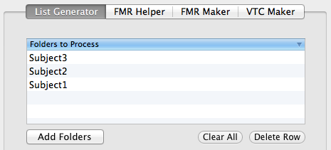
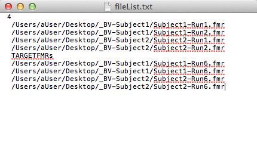

The list generator is a simple tool that creates a text file with a list of file paths to all FMR files found in the folder(s) that the user selects, as well as the path to all target FMR files (i.e. the target run to be used for motion correction). The text file is intended to be used with BrainVoyager's Batch Processing Wizard for 4d Data. Using a text file in the Batch Processing Wizard instead of selecting files in the Wizard's GUI is extremely desirable because the selection process for FMR file/target file pairs is somewhat cumbersome, especially when preprocessing a large number of files. The list generator automates the creation of a text file formatted properly to be read into the Wizard.
Click Add Folders to select folders containing FMR files that you'd like to preprocess. One or more folders can be selected at the same time, and there is no required directory structure. That is, a user could select two folders, one of which contains .FMR files, and another that contains sub-directories that each contain .FMR files. The application will automatically search through all selected folders and sub-folders for those containing FMR files, and the names of those folders will be displayed in the table as shown below:
You can add or remove folders using the Clear and Delete Row buttons. After selecting folders to process, enter a run number in the text field next to "Motion Correct to Run:". BrainVoyagerBot assumes that the same run number should be used as the target file for all FMR files in the selected folders. FMR files MUST include "run" or "Run" somewhere in the file name, for example "MyStudy_Subject1_Run3_Session1.fmr" (where it appears within the file name does not matter, the whole string will be searched). This is a temporary requirement that conforms to the Tarrlab's file naming conventions; Future versions of BrainVoyagerBot will offer alternative methods for selecting target FMR files.
After entering a run number, click Select Location to choose a location and name for the text file that will be generated, then click Generate to create the text file. A notification will appear as shown below when the process is complete, and a Finder window will open to the location of the new text file.
The text file output will resemble the image below. The total number of FMR files to be preprocessed is printed on the first line, then the FMR file paths, and the corresponding target FMR file paths as required by the Batch Processing Wizard.
